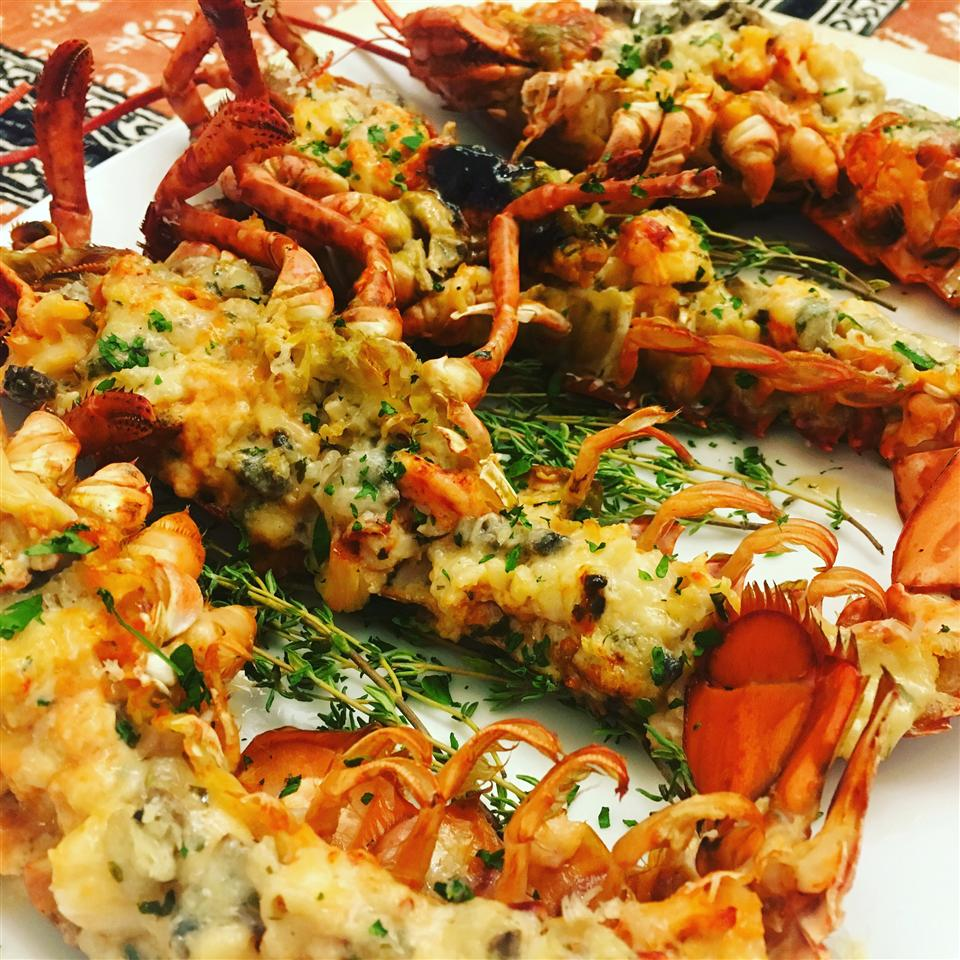

Lobster Thermidor

Description
Cook this delicious Lobster Thermidor with ease. Great for dinner parties with friends.
Ingredients
- 1 medium (1 1/2 pound) cooked lobster
- 2 tablespoons butter
- 1/4 cup white wine
- 1/4 cup double cream
- salt and freshly ground black pepper to taste
Steps
- Cut the lobster in half lengthwise, and remove the meat from the claws and tail. Leave to one side. Remove any meat from the head and set aside. Cut the meat up into pieces and place back into the shell.
- Melt the butter in a large skillet over medium heat. Add the shallot; cook and stir until tender. Mix in the fish stock, white wine and double cream. Bring to a boil, and cook until reduced by half. Mix in the mustard, lemon juice, parsley, salt and pepper.
- Preheat your oven's broiler.
- Place the lobster halves on a broiling pan or baking sheet, and spoon the sauce over the lobster meat in the shell. Sprinkle Parmesan cheese over the top.
- Broil for 3 to 4 minutes, just until golden brown. Serve immediately.